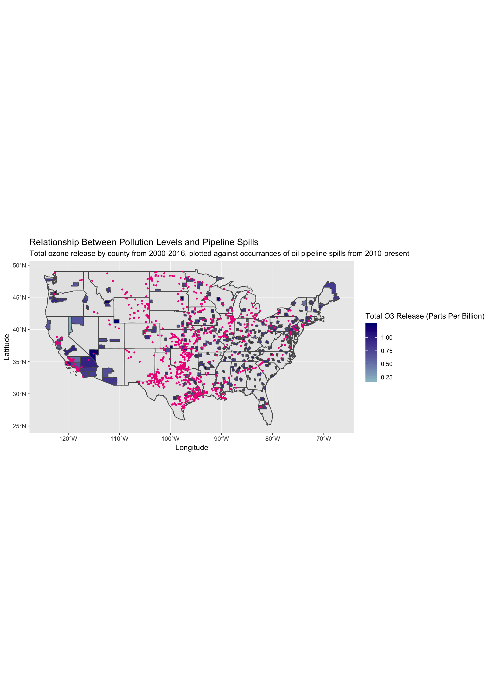

America’s Leaky Pipes: The Environmental Impact of Oil Pipeline Spills
Caitlin Timmons, Sarah Weden, Kendall Al-Bashir
Last updated on 2018-12-17
# This chunk identical to first code chunk in index.Rmd.
library(tidyverse)
library(leaflet)
library(sf)
library(readxl)
library(maps)
library(USAboundaries)
library(scales)
# Imports pipeline spills dataset from U.S Dept. of Transportation.
# In mutate(), we chose to convert the amount of oil released from barrels to gallons, to make the numbers more intuitive.
# Call to separate() prevents corporations with multiple variations on their names from being read as distinct entities.
pipeline_spills <- pipeline_spills <- read_excel("database.xlsx") %>%
unite(col = "Accident_Location", c("Accident_City", "Accident_State"), sep = ", ", remove = FALSE) %>%
mutate("State_ID" = Accident_State, "Barrels_Gallons" = Unintentional_Release_Barrels*42) %>%
separate(col = Operator_Name, into = c("Operator_General"), sep = " ", remove = FALSE, convert = FALSE,
extra = "drop", fill = "warn") %>%
filter(Environmental_Remediation_Costs > 0, Longitude < -60)“Liquid Gold”: Oil’s Expense On the Environment
When heavier oils are spilled, they immediately affect functions in organisms such as thermoregulation, feeding, and respiration.1 The lighter chemicals that are present in oils are absorbed by all surrounding life to the spill.2
The following scatterplot demonstrates how, for a representative sample of pipeline spills, the amount of oil released in the spill directly correlates to the costs paid out by the responsible corporation to repair environmental damage. This reinforces what is already known about the severe damage that oil poses to ecological systems, and shows that the amount of oil released can be used as another proxy by which to quantify the environmental hazard of any particular pipeline spill.
# Creates scatterplot looking at the relationship between gallons of oil released and environmental remediation costs paid out for each pipeline spill.
# geom_jitter() reduces overplotting.
# Log scales captures a more representative range of the data.
ggplot(data = pipeline_spills, mapping = aes(x = Barrels_Gallons, y = Environmental_Remediation_Costs)) +
geom_jitter(width = 0.3, height = 0.3, alpha = 0.6) +
geom_smooth(method = lm) +
scale_y_log10(label=dollar) +
scale_x_log10(label=comma) +
labs(title = "Correlation between amount of oil spillage and cost to the environment", subtitle = "Gallons of oil released in each pipeline spill versus the environmental remediation costs of the spill.
Regression line demonstrates positive trend.", x = "Oil Released (Gallons)", y = "Environmental Remediation Costs")
Who Is Responsible for the Environmental Damage?
Nearly 8000 incidents have occured since 1986, which is an annual average of about 300 spills. The average amount of gallons spilled annually is 3,192,000 or a daily average of 8,400 gallons.3 The highest priority in every spill cleanup is to prevent the leakage from reaching water sources. Common practices to contain the spill are berms and trenches. When there is no risk of polluting a water source the oil is often flooded out and collected by vacuums and skimmers.4 Spills in agricultural areas can have a lasting effect on the crop and soil.
In our initial map, we already explored some of the corporations that are causing pipeline spills. But not all of these companies are contributing equally to environmental damage. The following barplot reveals the corporations most culpable for environmental damage, by calculating the total amount of oil they have released into the environment. All of these companies are “repeat offenders,” given that they caused more than 5 spills in this timeframe. Be sure to note the scale on the x-axis, which represents the total gallons of oil released into the environment. The numbers are quite large, meaning even corporations with the smallest bars are still causing significant pollution.
# Creates data frame identical to pipeline_spills, but with variable n_spills added— this variable represents the number of spills caused by each individual corporation.
# Filters to include only corporations which have caused a significant number of spills.
pipeline_operators <- pipeline_spills %>%
group_by(Operator_General) %>%
summarize(n_spills = n()) %>%
filter(n_spills > 5) %>%
inner_join(pipeline_spills, by = "Operator_General")
# Creates variable Sum_Gallons which represents the total number of gallons of oil each corporation released into the environment.
# Call to filter() includes only corporations on the higher end of oil release, to demonstrate their culpability in environmental damage.
pipeline_barrels <- pipeline_operators %>%
group_by(Operator_General) %>%
summarize(Sum_Gallons = sum(Barrels_Gallons)) %>%
mutate(Operator_General = reorder(Operator_General, -Sum_Gallons)) %>%
filter(Sum_Gallons > 25000)
# Creates barplot identifying the total amount of oil spilled by the most culpable corporations.
# Addition of color is a stylistic choice.
ggplot(data = pipeline_barrels, mapping = aes(x = Operator_General, y = Sum_Gallons)) +
geom_col(fill = "red") +
coord_flip() +
scale_fill_discrete(guide = FALSE) +
labs(title = "Which Corporations Spilled the Most Oil?", subtitle = "Barplot representing the total gallons of oil released by most culpable corporations from 2010-present.", y = "Total Oil Released (Gallons)", x = "Corporation Name")
Pipeline Spills and Overall Pollution
When oil is spilled, the substance coats everything it touches, ruining ecosystems and habitat for wildlife. Government data shows on average 31 thousand barrels, or 1.302 million gallons, of oil (and other substances) are not cleaned up after pipeline accidents.5 When left alone, the oil on vegetation prevents the plants from accessing necessary resources such as sunlight.6 According to the Hazard Materials Safety Administration, almost 9 million gallons of crude oil has spilled since the year 2010.7 In 2010, 843,000 gallons of crude oil leaked into a river in Michigan. Tests have continued to be run and five years later the river was still contaminated.8 This spill is the very large spot seen in our initial map.
We then wanted to examine how these pipeline spills fit in with the larger scheme of pollution in different areas of the country. This information is relevant given the far-reaching and long-lasting effects of pipeline spills; they may be contributing to or worsening existing pollution. The following map uses data collected from the U.S Environmental Protection Agency to map the total ozone release levels (in blue) by county between 2000 and 2016. Note that the unit “parts per billion” is a measure of volume which denotes the concentration of pollutants in the air. Pipeline spills are marked by pink dots.
Although not representative of every county, we can see that especially on the West coast, areas with significant oil spills overlap with high levels of pollution, meaning that these pipelines are damaging an already damaged system. Moreover, in underdeveloped areas of the country with higher ozone release levels, it is likely that these pipelines are contributing significantly to that pollution.
# Creates blank map of state outlines, and transforms to sf object so it can be used to create a static map.
USA_sf <- map("state", plot = FALSE, fill = TRUE) %>%
st_as_sf() %>%
st_transform(4326)
# Creates blank map of U.S counties, excluding those states and territories not in the continental U.S.
# Call to mutate() will later allow us to join this dataset to another.
us_counties <- us_counties(map_date = NULL, resolution = c("high"), states = NULL) %>%
select(name, state_abbr) %>%
mutate("County" = name) %>%
filter(state_abbr != "GU", state_abbr != "VI", state_abbr != "PR", state_abbr != "AS", state_abbr != "MP",
state_abbr != "HI", state_abbr != "AK")
# Imports dataset sourced from U.S EPA on air pollution levels by county from 2000-2016.
# First call to group_by() and summarize() gets rid of repeat observations on the same day for O3 release. This is so they won't be included in a sum of total release.
# Second call to group_by() and summarize() sums total O3 release by county between 2000 and 2016.
# right_join() adds geometry to each county so its outline can be plotted on a map.
pollution <- read_excel("pollution.xlsx") %>%
separate(col = Date_Local, into = c("Year", "Month", "Day"), sep = "-",
convert = FALSE, extra = "warn", fill = "warn") %>%
group_by(County, Day) %>%
summarize(Mean_O3 = mean(O3_Mean)) %>%
group_by(County) %>%
summarize(Sum_O3 = sum(Mean_O3)) %>%
right_join(us_counties, by = "County") %>%
select(-c(name, state_abbr)) %>%
drop_na()
# Converts pipeline_spills dataset that we've been using to an sf object so it can be plotted on a static map.
pipeline_spills_sf <- pipeline_spills %>%
filter(Longitude >= -130) %>%
st_as_sf(coords = c("Longitude", "Latitude"), crs = 4326)
# Creates static map with state outlines and county outlines only for counties with recorded pollution data.
# Fill argument colors counties by the sum of their O3 release.
# geom_sf(data = pipeline_spills_sf...) plots each pipeline spill on the map in pink. This allows us to view ovelap in pollution levels and oil spills.
ggplot() +
geom_sf(data = USA_sf) +
geom_sf(data = pollution, aes(fill = Sum_O3)) +
scale_fill_continuous(low = "lightblue3", high = "navy",
space = "Lab", na.value = "white",
guide = "colourbar", aesthetics = "fill") +
geom_sf(data = pipeline_spills_sf, size = 0.7, col = "deeppink2") +
coord_sf(crs = 4326) +
labs(title = "Relationship Between Pollution Levels and Pipeline Spills",
subtitle = "Total ozone release by county from 2000-2016, plotted against occurrances of oil pipeline spills from 2010-present", x = "Longitude", y = "Latitude", fill = "Total O3 Release (Parts Per Billion)")
Conclusion
We’ve learned that, unbeknownst to most due to a lack of media coverage, oil spills in the U.S are prevalent and damaging to the natural environment. Corporations have been spilling hundreds of thousands of gallons of oil into the environment, and despite paying out huge sums of money for environmental remediation, their cleanup efforts are often incomplete. This leads to long-term ecological damage and increased overall pollution levels. Moreover, many of these corporations are “repeat offenders;” Enterprise alone caused 154 spills from 2010-2017. As the U.S settles into its role as the world’s largest oil producer, these spills will continue to happen.
If you’re motivated to fight back against the corporations harming the environment, consider donating or volunteering to support organizations like the Water Is Life Movement, League of Conservation Voters, the Sierra Club, and the U.S Climate Action Network.
Environmental Effects of Oil Spill. Retrieved from https://www.environmentalpollutioncenters.org/oil-spill/effects/↩
Environmental Effects of Oil Spills. Retrieved from https://www.itopf.org/knowledge-resources/documents-guides/environmental-effects/↩
Stove, Richard. America’s Dangerous Pipelines. Retrieved from https://www.biologicaldiversity.org/campaigns/americas_dangerous_pipelines/↩
Oil Spill Prevention + Response. Retrieved from http://www.oilspillprevention.org/oil-spill-cleanup/land-oil-spill-cleanup↩
Stover, Richard. America’s Dangerous Pipelines. Retrieved from https://www.biologicaldiversity.org/campaigns/americas_dangerous_pipelines/↩
Francis, Mark. “Response to Inland Oil Spills”. ISCO Newsletter. Retrieved from http://www.spillcontrol.org/technical_articles/Response_to_inland_oil_spills.pdf↩
Moon, Emily. 2017, Nov 17. After the Latest Leak in South Dakota, How Safe are America’s Pipelines? Retrieved from https://psmag.com/environment/how-safe-are-americas-pipelines↩
Moon, Emily. 2017, Nov 17. After the Latest Leak in South Dakota, How Safe are America’s Pipelines? Retrieved from https://psmag.com/environment/how-safe-are-americas-pipelines↩